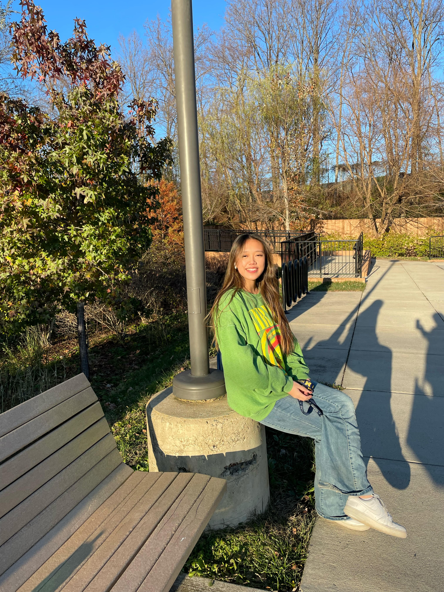

Yuyu Yang
Hi! I'm Yuyu, a sophmore studying UX design and BCN at the university of michigan. Studio Ghibli's films had always been a source of comfort for me. I hope this webpage introduces you guys to their work!
Hi! I'm Yuyu, a sophmore studying UX design and BCN at the university of michigan. Studio Ghibli's films had always been a source of comfort for me. I hope this webpage introduces you guys to their work!